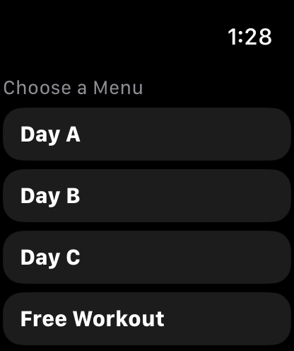
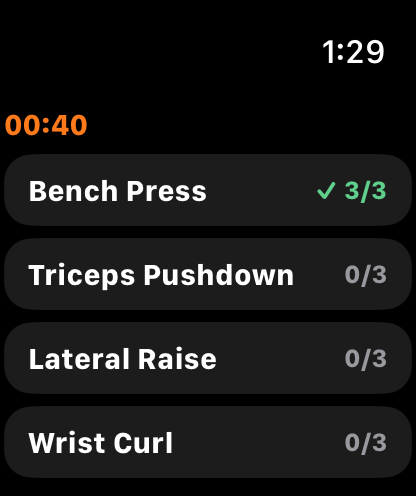
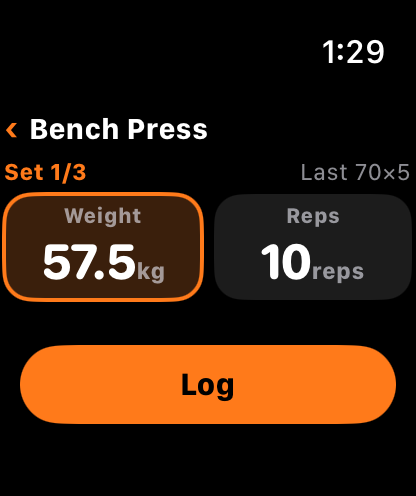
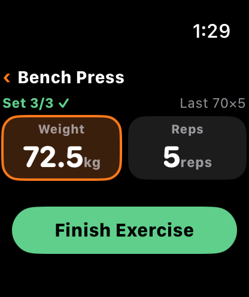
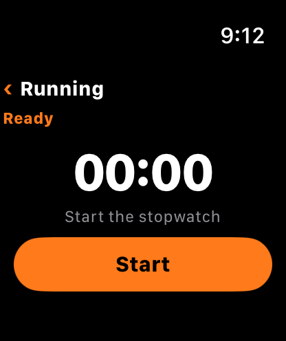
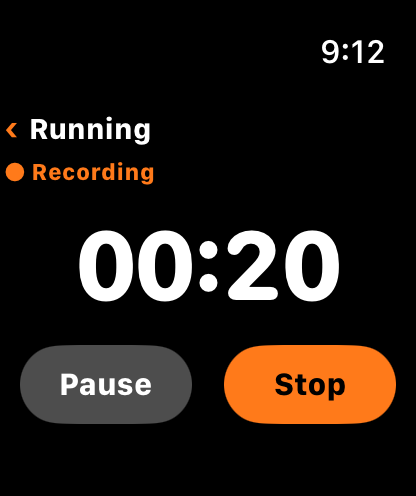
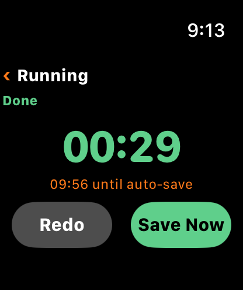
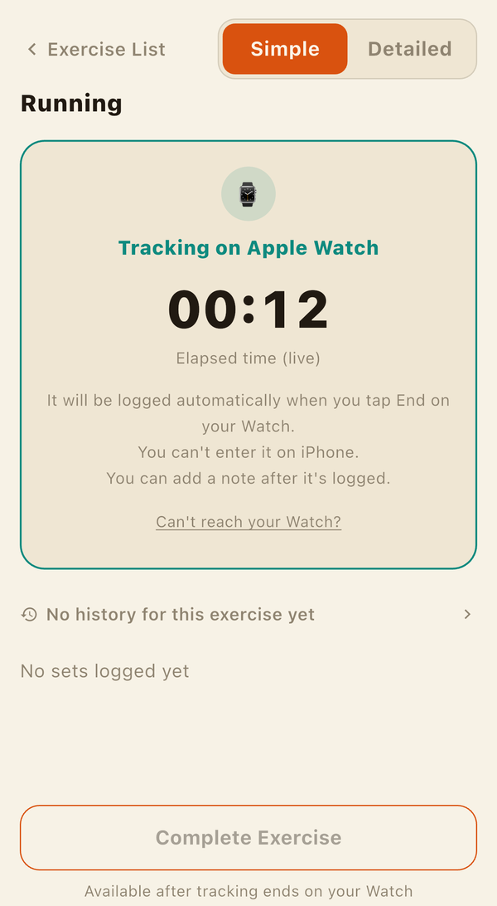

LiFTY works on Apple Watch. You can log a workout from start to finish on your wrist, without taking out your iPhone. What you record on the Watch is the same session you'd see on the iPhone.
What you need
- An iPhone (iOS 18 or later) and a paired Apple Watch (watchOS 11 or later).
- When you install LiFTY on the iPhone, the LiFTY Watch app is installed on the paired Apple Watch too.
- There's no extra charge.
Log a workout with only the Watch
- From the Watch home screen, pick today's location and a menu to start. You can also start without a menu with "Log freely" (you choose from exercises you used recently or often).
- You'll see the list of exercises with their progress. You can log them in any order.
- Open an exercise and log your sets. Weight and reps are pre-filled with your targets.
- When you're done, tap "Finish Workout", check the summary, and save.


You don't need your iPhone nearby. While it's out of range, the Watch keeps your records and sends them automatically once it reconnects.
Change weight and reps with the Digital Crown
Tap the weight or reps field to focus it, then turn the Digital Crown to adjust the value. Weight changes by the "weight increment" you set for each exercise; reps change by 1. If you hit your target, a single tap on "Log" is all it takes.


- For exercises that track left and right separately, you can switch sides while logging. After saving, it moves to the other side automatically.
- When you reach the target set count, the button turns into a green "Finish Exercise" (the same check as on the iPhone).
Join a workout you started on the iPhone
If a workout you started on the iPhone is in progress, "Join Workout" appears on the Watch home screen. Heart rate and calorie tracking begin on the Watch from the moment you join. Logging the same exercise on both devices at the same time isn't supported.
The iPhone and Watch keep the same view: the exercise list, or the set logging screen of the same exercise. When the iPhone imports a set you logged on the Watch and it's showing the set logging screen, it switches to that exercise.
Time cardio with a stopwatch
- Tap "Start" on a cardio exercise to see elapsed time, current heart rate, and calories. You can tap "Pause" and resume.
- Tap "Stop" to review the duration (in seconds), average heart rate, and calories.
- Tap "Save Now" to confirm. If you don't, it's saved automatically after 10 minutes. You can also tap "Redo" to time it again.



Timing continues from the start time even if your wrist drops and the screen turns off. While the Watch is timing cardio, that exercise on the iPhone is locked and shows the Watch's live values (to prevent double entry).

Heart rate and calories
- During a workout, Apple Watch measures your heart rate and calories burned.
- Cardio records store heart rate at 5-second intervals. On the iPhone, you can see the average and maximum heart rate plus a line chart in Past Records and the Progress (exercise detail) screen.
- Calories burned are Apple Watch's own estimate, not calculated by LiFTY. Because they're estimated from heart rate and wrist motion, strength training — which involves less continuous movement than cardio — tends to be less accurate. Treat the number as a rough guide.
How it relates to Apple Health
For workouts you record with Apple Watch, the Watch itself saves the workout — including its estimated calories — directly to Apple Health. The iPhone doesn't write the same workout again, so the same workout won't show up twice in Health. This is the same regardless of how you've set the toggles under Health Sync in Settings. See also Body Stats, Goals, and Health App Sync.
What you can't do on the Watch
Anything that doesn't fit on a small screen is done on the iPhone.
- Entering RPE, notes, and warm-up (W) flags. W is reflected on the Watch if it's set in the menu's target; the rest can be added later from the iPhone's edit screen.
- Adding exercises, logging for past dates, and editing records.
- The "update next target" suggestion at the end of a workout. If you finish on the Watch, a card on the iPhone's Home screen prompts you when you next open the app.
Keeping iPhone and Watch in sync
- When you finish or discard a workout on the iPhone, the Watch stops tracking and returns to its home screen.
- A workout you finish on the Watch is imported when you open the iPhone app. Finishing the same workout on the iPhone as well won't create duplicates.
- While you've declared today a rest day on the iPhone, "Start Workout" is also disabled on the Watch.
If they don't seem to connect
If a Watch record doesn't show up on the iPhone, check the following.
- Open the LiFTY app on the iPhone once (Watch records are imported when you open it).
- Make sure the iPhone and Apple Watch are paired and Bluetooth is on.
- Watch records stay on the Watch until they connect; they won't disappear.
If that doesn't help, please contact Support.
LiFTY is a workout log you can start using right away, with no account required.
Download on the App Store